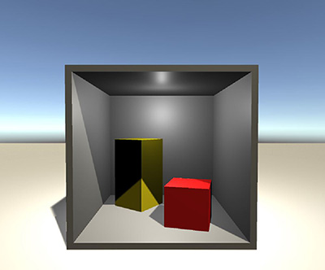
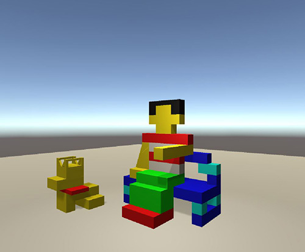

Graphics - Transforms Intro Project
Project Specifications
Create Cube Primitives that can be translated, rotated and scaled to produce the desired output.
Three different scenes are created, the CornelL box for scaling cubes, the spiral stairs to rotate and automate the creation process, and finally the complex model scene, where only cubes are used to create a model of complexity.
In all of these scenes only a cube is created.
Project was implemented in two platforms: Unity 3D and G3D (opensource)
Project guide and specification coutesy - Morgan McGuire's The Graphics Codex : Cubes
Scene 1
Seven scaled cubes were used to create this scene. The Cornell Box is a real-world box at Cornell University that has been long used for photorealistic rendering experiments.The idea is that by constructing a real scene containing only well-measured geometric primitives.
Scene 2
The staircase in a spiral fashion was a harder endeavor than the Cornell box. This involved translation the next stair correctly and then rotating it. Simple rotating a long cube might look like a spiral staircase from an angle, but it doesn’t really create one.
This took a while to understand and figure out the correlation between the stairs created. I ended up using the translation with respect to the previous stair. This worked in the end.
Scene 3
The final scene by far was the hardest to figure out in terms of idea. I finally ended up creating a Lego scene. The entire scene is created with cubes. There are each individual entities (girl, bench and dog). Each entity was then collectively scaled and rotated to match the scene.
